Chapter 7 Results
7.1 Convergence and posterior predictive checks
Note that even though \(\epsilon\) is part of our sampling model, it is not a parameter of interest since its expected value is fixed at 0, so we ignore it for our convergence checks. Let ESS be effective sample size. Note that ESS can be larger than the number of MCMC iterations due to negative autocorrelations (Stan Development Team, 2021). Here, we are comparing to 4,000 iterations since we ran 1,000 post burn-in iterations for 4 chains.
7.1.1 Budapest series
The order fitted is \(y_{t}|\mathbf{\gamma}\ \sim\ SARIMA(1,0,0)(2,1,0)_{12}\).
The results for the MCMC algorithm are displayed in Table 7.1. The effective sample sizes are far greater than 1,000 and the \(\widehat{R}\) values do not exceed 1 by any significant amount. Note that we are not worried about the large value for \(\sigma\) for the same reason as we are not interested in the convergence of \(\epsilon\). The width of the 90% credible interval for \(\mu\) appears potentially sizeable, but it is not too problematic on the overall scale of cases in Budapest, which are in the hundreds. The intervals of the other ARIMA coefficients seem reasonable and do not include 0.
The Box-Cox transformation parameter was determined to be \(\lambda \approx 0.08\), so to convert back in terms of the original series \(\left( x_{t} \right)\), we use \(x_{t} = \left( \lambda y_{t} + 1 \right)^{1/\lambda}\).
| Parameter | Mean | Standard error | 0.05 quantile | 0.95 quantile | ESS | \(\widehat{R}\) |
|---|---|---|---|---|---|---|
| \(\mu\) | 1.7 | 0.1 | -11.1 | 14.7 | 4091 | 1 |
| \(\sigma\) | 149.1 | 0.2 | 133.5 | 167 | 3926 | 1 |
| \(\phi\) | 0.5 | 0 | 0.4 | 0.6 | 3970 | 1 |
| \(\Phi_{1}\) | -0.4 | 0 | -0.5 | -0.3 | 3817 | 1 |
| \(\Phi_{2}\) | -0.4 | 0 | -0.5 | -0.2 | 3883 | 1 |
set.seed(1)
# fit bayesian time series model using stan
series = as.numeric(buda1$Cases)
series=ts(series,freq=season)
sf.buda = auto.sarima(ts = series,lambda=bc.lambda.buda,stepwise=FALSE,iter=itns,approximation=FALSE,prior_mu0=normal(0,10),prior_sigma0=cauchy(0,5),prior_ar=normal(0,2),prior_ma=normal(0,2),prior_sar=normal(0,2),prior_sma=normal(0,2))
sf.buda
orders.buda=sf.buda$model
order.buda = c(orders.buda$p,orders.buda$d,orders.buda$q)
sorder.buda = c(orders.buda$P,orders.buda$D,orders.buda$Q)
sum.buda = summary(sf.buda)
data.buda = extract_stan(sf.buda)
sum.buda[,1:4] = round(sum.buda[,1:4],1); sum.buda$ess=round(sum.buda$ess); sum.buda$Rhat=round(sum.buda$Rhat,2)
write_xlsx(data.frame(sum.buda), "data/buda.xlsx")# Coefficients
mu = mean(data.buda$mu0); s = mean(data.buda$sigma0); ar1 = mean(data.buda$ar0)
sar1 = mean(data.buda$sar0[,1]); sar2 = mean(data.buda$sar0[,2])
# Plots
par(mfcol=c(5,1),mar=c(1,2.75,1,1),mgp=c(1.75,.75,0),oma=c(1.5,0,0,0))
hist(data.buda$mu0,main="",breaks=45,ylab=expression(mu));abline(v=mu,col='red',lwd=2);legend("topright",expression(paste("Mean of ",mu," ")),lty=1,lwd=2,col='red')
hist(data.buda$sigma,main="",breaks=45,ylab=expression(sigma));abline(v=s,col='red',lwd=2);legend("topright",expression(paste("Mean of ",sigma," ")),lty=1,lwd=2,col='red')
hist(data.buda$ar,main="",breaks=45,ylab=expression(phi));abline(v=ar1,col='red',lwd=2);legend("topright",expression(paste("Mean of ",phi," ")),lty=1,lwd=2,col='red')
hist(data.buda$sar[,1],main="",breaks=45,ylab=expression(Phi[1]));abline(v=sar1,col='red',lwd=2);legend("topright",expression(paste("Mean of ",Phi[1]," ")),lty=1,lwd=2,col='red')
hist(data.buda$sar[,2],main="",breaks=45,ylab=expression(Phi[2]));abline(v=sar2,col='red',lwd=2);legend("topright",expression(paste("Mean of ",Phi[2]," ")),lty=1,lwd=2,col='red')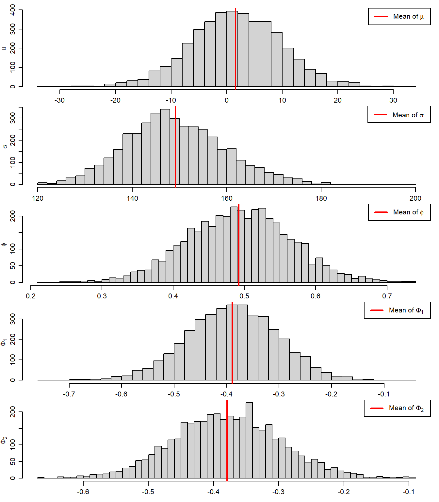
Figure 7.1: Histograms of MCMC samples for parameters in Budapest series
Although not strictly a convergence check, in Figure 7.1, we can see that the posterior distributions look reasonable.
In Figure 7.2, we can see that the ACF plots show negligible autocorrelation. Thinning is not required. In Figure 7.3, the MCMC draws are all close to their areas of highest posterior density.
par(mfcol=c(5,1),mar=c(2,2.75,1,1),mgp=c(1.75,.75,0),oma=c(1.5,0,0,0))
# Autocorrelation
acf(data.buda$mu0,ylab=expression(mu),main="")
acf(data.buda$sigma,ylab=expression(sigma),main="")
acf(data.buda$ar,ylab=expression(phi),main="")
acf(data.buda$sar[,1],ylab=expression(Phi[1]),main="")
acf(data.buda$sar[,2],ylab=expression(Phi[2]),main="")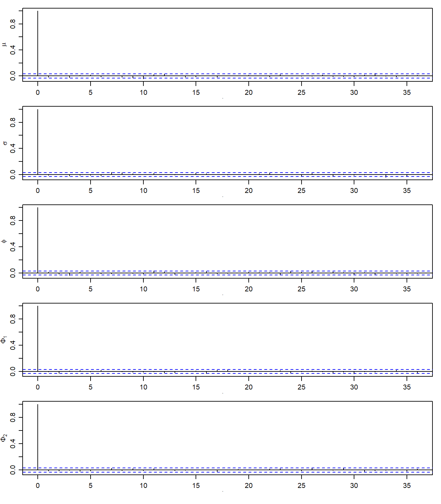
Figure 7.2: ACF plots of MCMC samples for parameters in Budapest series
# Traceplots
plot(data.buda$mu0,xlab="Iteration",ylab=expression(mu))
plot(data.buda$sigma,xlab="Iteration",ylab=expression(sigma))
plot(data.buda$ar,xlab="Iteration",ylab=expression(phi))
plot(data.buda$sar[,1],xlab="Iteration",ylab=expression(Phi[1]))
plot(data.buda$sar[,2],xlab="Iteration",ylab=expression(Phi[2]))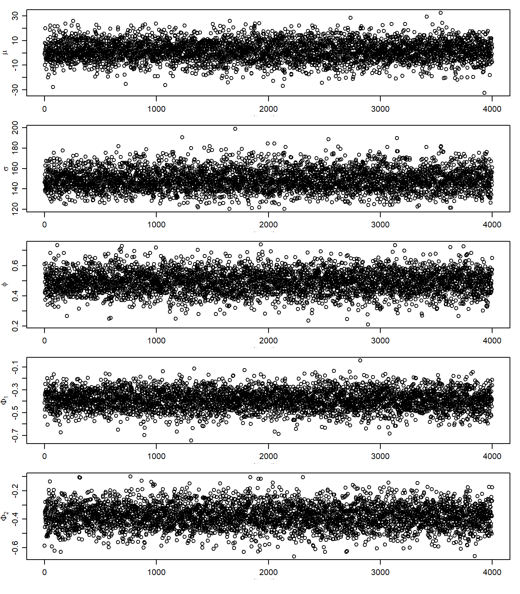
Figure 7.3: Traceplots of MCMC samples for parameters in Budapest series
Now, let us perform posterior predictive checks for a test statistic \(T\). Let \(x_{t}^{'}\) be the simulated series and \(x_{t}\) be the original monthly series, as described in Section 6.5.
| \(T\) | Identity | ACF | PACF |
|---|---|---|---|
| \(P\left( T\left( x_{t}^{'} \right) > T\left( x_{t} \right) \right)\) | 0.54 | 0.41 | 0.5 |
In Table 7.2, we can see that the simulated series tends to match the original series quite well, particularly the magnitudes of the original series and the PACF. The ACF could be a little closer to 0.5, but we are also using a model fitted to 108 observations to predict the ACF values of the true 120 observation data set, so if we had only compared to the ACF values of the first 108 observations, the test statistic would likely be close to 0.5.
We can also plot histograms of the test statistics, but a quick check indicates that there is not any interesting behaviour and we cannot compare to a single mean value because the series values, ACF and PACF all consist of more than one value.
Overall, the convergence checks indicate that the MCMC chains for the Budapest fitting have converged and the posterior predictive checks indicate that the model does a good job at replicating the behaviour of the original series.
7.1.2 Pest series
The order fitted is \(y_{t}|\mathbf{\gamma}\ \sim\ SARIMA(1,0,0)(0,1,1)_{12}\).
The results for the MCMC algorithm are displayed in Table 7.3.
| Parameter | Mean | Standard error | 0.05 quantile | 0.95 quantile | ESS | \(\widehat{R}\) |
|---|---|---|---|---|---|---|
| \(\mu\) | -2.5 | 0.1 | -9.2 | 4.4 | 3005 | 1 |
| \(\sigma\) | 127.5 | 0.1 | 114.3 | 142.4 | 3923 | 1 |
| \(\phi\) | 0.6 | 0 | 0.4 | 0.7 | 3688 | 1 |
| \(\Theta_{1}\) | -0.7 | 0 | -0.9 | -0.6 | 3454 | 1 |
The effective sample sizes are far greater than 1,000 and the \(\widehat{R}\) values do not exceed 1 by any significant amount. Again, the large value for \(\sigma\) and width of the 90% credible interval is not concerning. The intervals of the other ARIMA coefficients seem reasonable and do not include 0.
The Box-Cox transformation parameter was determined to be \(\lambda \approx - 0.01\).
set.seed(1)
series = as.numeric(pest1$Cases)
series=ts(series,freq=season)
sf.pest = auto.sarima(ts = series,lambda=bc.lambda.pest,stepwise=FALSE,iter=itns,approximation=FALSE,prior_mu0=normal(0,10),prior_sigma0=cauchy(0,5),prior_ar=normal(0,2),prior_ma=normal(0,2),prior_sar=normal(0,2),prior_sma=normal(0,2))
sf.pest
orders.pest=sf.pest$model
order.pest = c(orders.pest$p,orders.pest$d,orders.pest$q)
sorder.pest = c(orders.pest$P,orders.pest$D,orders.pest$Q)
# Rhat/Effective sample size
sum.pest = summary(sf.pest)
data.pest = extract_stan(sf.pest)
sum.pest[,1:4] = round(sum.pest[,1:4],1); sum.pest$ess=round(sum.pest$ess); sum.pest$Rhat=round(sum.pest$Rhat,2)
write_xlsx(data.frame(sum.pest), "data/pest.xlsx")# Coefficients
mu = mean(data.pest$mu0); s = mean(data.pest$sigma0); ar1 = mean(data.pest$ar0)
sma1 = mean(data.pest$sma0[,1])
# Plots
par(mfcol=c(4,1),mar=c(1,2.75,1,1),mgp=c(1.75,.75,0),oma=c(1.5,0,0,0))
hist(data.pest$mu0,main="",breaks=45,ylab=expression(mu));abline(v=mu,col='red',lwd=2);legend("topright",expression(paste("Mean of ",mu," ")),lty=1,lwd=2,col='red')
hist(data.pest$sigma,main="",breaks=55,ylab=expression(sigma));abline(v=s,col='red',lwd=2);legend("topright",expression(paste("Mean of ",sigma," ")),lty=1,lwd=2,col='red')
hist(data.pest$ar,main="",breaks=45,ylab=expression(phi));abline(v=ar1,col='red',lwd=2);legend("topright",expression(paste("Mean of ",phi," ")),lty=1,lwd=2,col='red')
hist(data.pest$sma[,1],main="",breaks=45,ylab=expression(Theta[1]));abline(v=sma1,col='red',lwd=2);legend("topright",expression(paste("Mean of ",Theta[1]," ")),lty=1,lwd=2,col='red')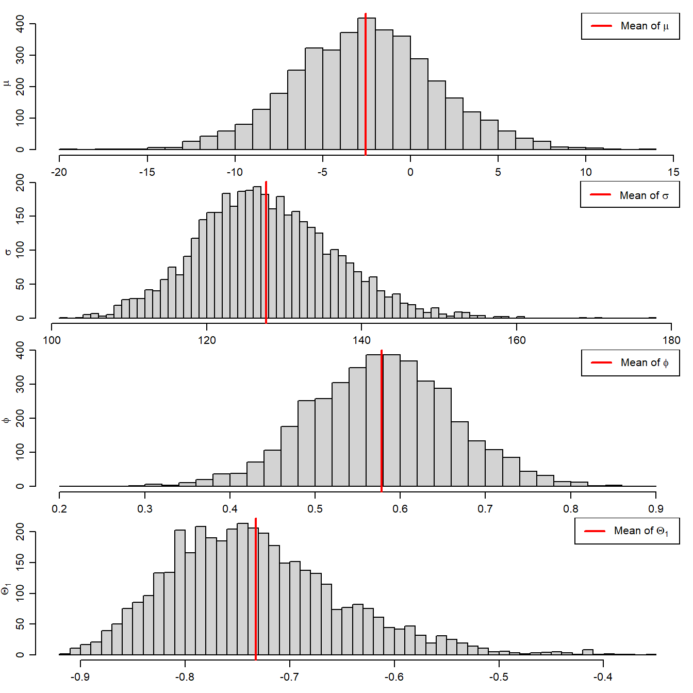
Figure 7.4: Histograms of MCMC samples for parameters in Pest series
In Figure 7.4, we can see that the posterior distributions look reasonably well-behaved. In Figure 7.5, we can see that the ACF plots show negligible autocorrelation. Thinning is not required. In Figure 7.6, the MCMC draws are all close to their areas of highest posterior density.
par(mfcol=c(4,1),mar=c(2,2.75,1,1),mgp=c(1.75,.75,0),oma=c(1.5,0,0,0))
# Autocorrelation
acf(data.pest$mu0,ylab=expression(mu),main="")
acf(data.pest$sigma,ylab=expression(sigma),main="")
acf(data.pest$ar,ylab=expression(phi),main="")
acf(data.pest$sma[,1],ylab=expression(Theta[1]),main="")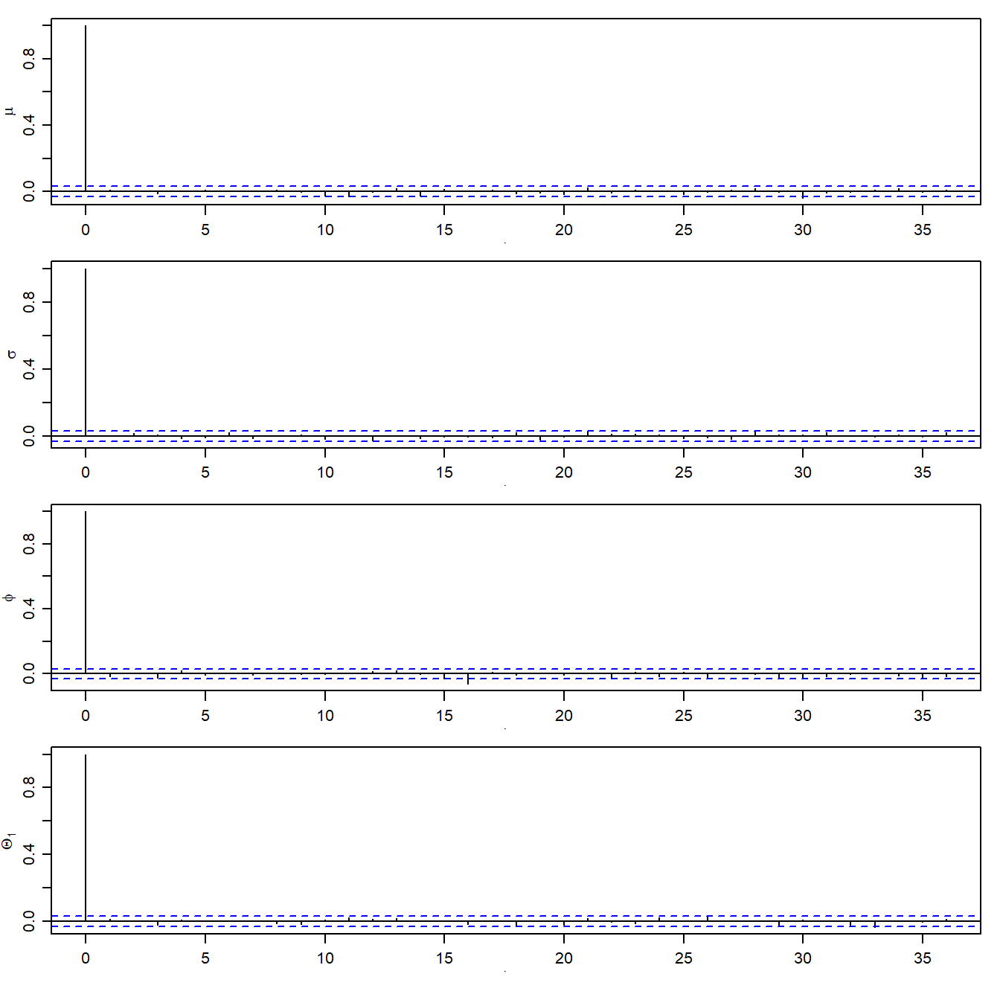
Figure 7.5: ACF plots of MCMC samples for parameters in Pest series
# Traceplots
plot(data.pest$mu0,xlab="Iteration",ylab=expression(mu))
plot(data.pest$sigma,xlab="Iteration",ylab=expression(sigma))
plot(data.pest$ar,xlab="Iteration",ylab=expression(phi))
plot(data.pest$sma[,1],xlab="Iteration",ylab=expression(Theta[1]))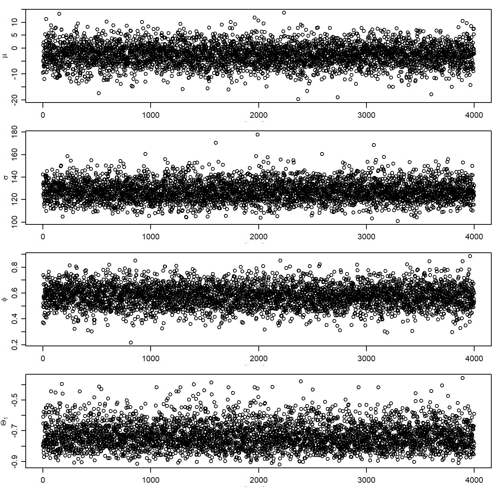
Figure 7.6: Traceplots of MCMC samples for parameters in Pest series
Now, let us perform posterior predictive checks for a test statistic \(T\). Let \(x_{t}^{'}\) be the simulated series and \(x_{t}\) be the original monthly series, as described in Section 6.5.
| \(T\) | Identity | ACF | PACF |
|---|---|---|---|
| \(P\left( T\left( x_{t}^{'} \right) > T\left( x_{t} \right) \right)\) | 0.52 | 0.44 | 0.52 |
In Table 7.4, we can see that the simulated series tends to match the original series quite well, particularly the magnitudes of the original series and the PACF. The ACF fits better than the Budapest series. This is a good result given we are using 108 observations in our model and comparing to a 120-observation series.
Overall, the convergence checks indicate that the MCMC chains for the Pest fitting have converged and the posterior predictive checks indicate that the model does a good job at replicating the behaviour of the original series.
7.1.3 Heves series
The order fitted is \(y_{t}|\mathbf{\gamma}\ \sim\ SARIMA(1,0,0)(0,1,2)_{12}\).
The results for the MCMC algorithm are displayed in Table 7.5.
| Parameter | Mean | Standard error | 0.05 quantile | 0.95 quantile | ESS | \(\widehat{R}\) |
|---|---|---|---|---|---|---|
| \(\mu\) | -2 | 0 | -6.9 | 2.9 | 3938 | 1 |
| \(\sigma\) | 84.2 | 0.1 | 75.3 | 94.4 | 3864 | 1 |
| \(\phi\) | 0.7 | 0 | 0.5 | 0.8 | 3838 | 1 |
| \(\Theta_{1}\) | -0.8 | 0 | -1 | -0.6 | 3819 | 1 |
| \(\Theta_{2}\) | 0.1 | 0 | -0.1 | 0.3 | 3797 | 1 |
The effective sample sizes are far greater than 1,000 and the \(\widehat{R}\) values do not exceed 1 by any significant amount. Again, the large value for \(\sigma\) and width of the 90% credible interval is not concerning. The intervals of the other ARIMA coefficients seem reasonable and do not include 0, except for \(\Theta_{2}\).
The Box-Cox transformation parameter was determined to be \(\lambda \approx - 0.25\), the largest adjustment we have had to make for heteroskedasticity.
set.seed(1)
series = as.numeric(heves1$Cases)
series=ts(series,freq=season)
sf.heves = auto.sarima(ts = series,lambda=bc.lambda.heves,stepwise=FALSE,iter=itns,approximation=FALSE,prior_mu0=normal(0,10),prior_sigma0=cauchy(0,5),prior_ar=normal(0,2),prior_ma=normal(0,2),prior_sar=normal(0,2),prior_sma=normal(0,2))
sf.heves
orders.heves=sf.heves$model
order.heves = c(orders.heves$p,orders.heves$d,orders.heves$q)
sorder.heves = c(orders.heves$P,orders.heves$D,orders.heves$Q)
# Rhat/Effective sample size
sum.heves = summary(sf.heves)
data.heves = extract_stan(sf.heves)
sum.heves[,1:4] = round(sum.heves[,1:4],1); sum.heves$ess=round(sum.heves$ess); sum.heves$Rhat=round(sum.heves$Rhat,2)
write_xlsx(data.frame(sum.heves), "data/heves.xlsx")# Coefficients
mu = mean(data.heves$mu0); s = mean(data.heves$sigma0); ar1 = mean(data.heves$ar0)
sma1 = mean(data.heves$sma0[,1]); sma2 = mean(data.heves$sma0[,2])
# Plots
par(mfcol=c(5,1),mar=c(1,2.75,1,1),mgp=c(1.75,.75,0),oma=c(1.5,0,0,0))
hist(data.heves$mu0,main="",breaks=45,ylab=expression(mu));abline(v=mu,col='red',lwd=2);legend("topright",expression(paste("Mean of ",mu," ")),lty=1,lwd=2,col='red')
hist(data.heves$sigma,main="",breaks=45,ylab=expression(sigma));abline(v=s,col='red',lwd=2);legend("topright",expression(paste("Mean of ",sigma," ")),lty=1,lwd=2,col='red')
hist(data.heves$ar,main="",breaks=45,ylab=expression(phi));abline(v=ar1,col='red',lwd=2);legend("topright",expression(paste("Mean of ",phi," ")),lty=1,lwd=2,col='red')
hist(data.heves$sma[,1],main="",breaks=48,ylab=expression(Theta[1]));abline(v=sma1,col='red',lwd=2);legend("topright",expression(paste("Mean of ",Theta[1]," ")),lty=1,lwd=2,col='red')
hist(data.heves$sma[,2],main="",breaks=56,ylab=expression(Theta[2]));abline(v=sma2,col='red',lwd=2);legend("topright",expression(paste("Mean of ",Theta[2]," ")),lty=1,lwd=2,col='red')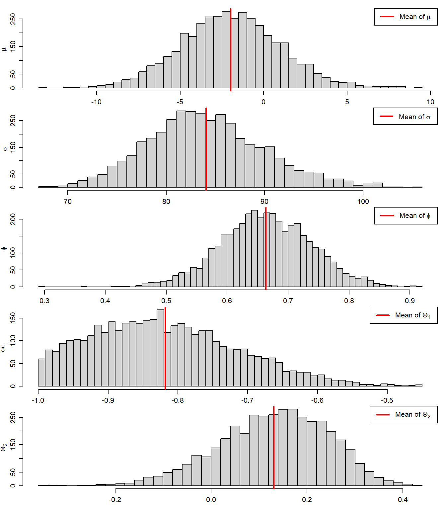
Figure 7.7: Histograms of MCMC samples for parameters in Heves series
In Figure 7.7, we can see that the posterior distributions look reasonably well-behaved, although the posterior distribution for \(\Theta_{1}\) exhibits a non-symmetry that we have not seen before. This series is probably the most complicated due to the presence of potential outliers which I decided not to remove.
par(mfcol=c(5,1),mar=c(2,2.75,1,1),mgp=c(1.75,.75,0),oma=c(1.5,0,0,0))
# Autocorrelation
acf(data.heves$mu0,ylab=expression(mu),main="")
acf(data.heves$sigma,ylab=expression(sigma),main="")
acf(data.heves$ar,ylab=expression(phi),main="")
acf(data.heves$sma[,1],ylab=expression(Theta[1]),main="")
acf(data.heves$sma[,2],ylab=expression(Theta[2]),main="")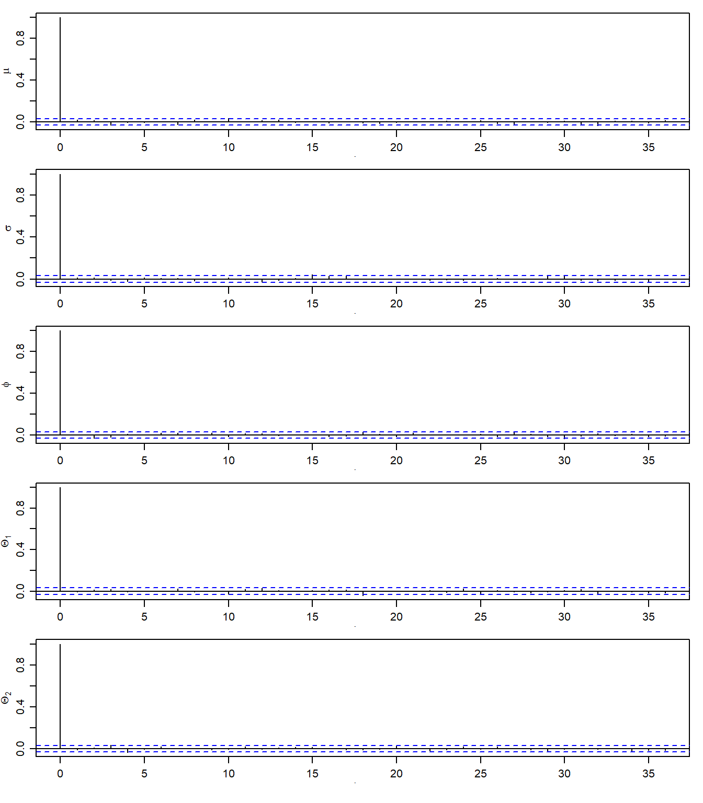
Figure 7.8: ACF plots of MCMC samples for parameters in Heves series
# Traceplots
plot(data.heves$mu0,xlab="Iteration",ylab=expression(mu))
plot(data.heves$sigma,xlab="Iteration",ylab=expression(sigma))
plot(data.heves$ar,xlab="Iteration",ylab=expression(phi))
plot(data.heves$sma[,1],xlab="Iteration",ylab=expression(Theta[1]))
plot(data.heves$sma[,2],xlab="Iteration",ylab=expression(Theta[2]))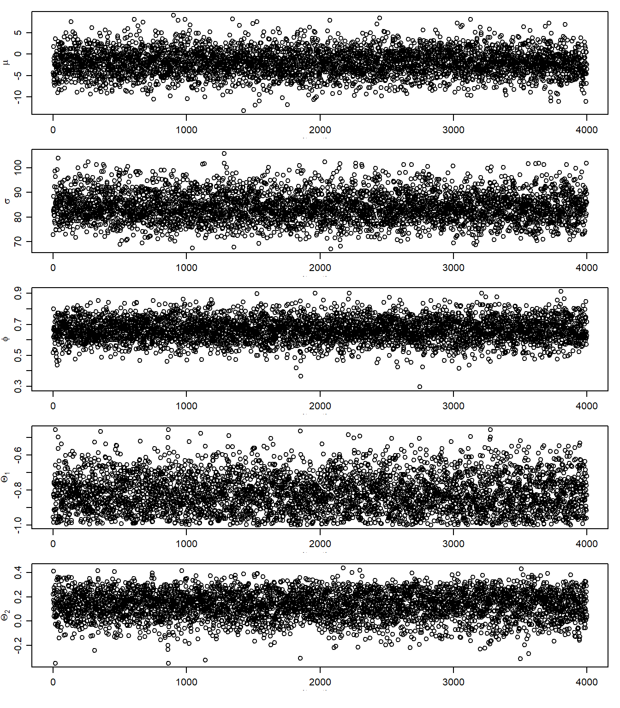
Figure 7.9: Traceplots of MCMC samples for parameters in Heves series
In Figure 7.8, we can see that the ACF plots show negligible autocorrelation. Thinning is not required. In Figure 7.9, the MCMC draws are all close to their areas of highest posterior density.
Now, let us perform posterior predictive checks for a test statistic \(T\). Let \(x_{t}^{'}\) be the simulated series and \(x_{t}\) be the original monthly series, as described in Section 6.5.
| \(T\) | Identity | ACF | PACF |
|---|---|---|---|
| \(P\left( T\left( x_{t}^{'} \right) > T\left( x_{t} \right) \right)\) | 0.55 | 0.37 | 0.44 |
In Table 7.6, we can see that the simulated series tends to match the original series quite well in terms of magnitude. The PACF values also correspond reasonably well, but the ACF p-value is a little low. Nevertheless, this is a good result given we are using 108 observations in our model and comparing to a 120-observation series.
Overall, the convergence checks indicate that the MCMC chains for the Heves fitting have converged and the posterior predictive checks indicate that the model does an acceptable job at replicating the behaviour of the original series. The histogram of samples of \(\Theta_{1}\) appeared unusually non-symmetric, but the ACF and traceplot for this variable did not indicate anything to worry about. Nevertheless, instability in this coefficient may have contributed to the non-ideal ACF p-value. This series seems to be the most difficult to model out of the four we are studying.
7.1.4 Somogy series
The order fitted is \(y_{t}|\mathbf{\gamma}\ \sim\ SARIMA(0,0,2)(0,1,1)_{12}\).
The results for the MCMC algorithm are displayed in Table 7.7.
| Parameter | Mean | Standard error | 0.05 quantile | 0.95 quantile | ESS | \(\widehat{R}\) |
|---|---|---|---|---|---|---|
| \(\mu\) | -4.6 | 0.1 | -14.3 | 5.7 | 3817 | 1 |
| \(\sigma\) | 59.4 | 0.1 | 53.3 | 66.4 | 4118 | 1 |
| \(\theta_{1}\) | 0.5 | 0 | 0.3 | 0.6 | 3478 | 1 |
| \(\theta_{2}\) | 0.2 | 0 | 0.1 | 0.4 | 3559 | 1 |
| \(\Theta_{1}\) | -0.4 | 0 | -0.6 | -0.3 | 3081 | 1 |
The effective sample sizes are far greater than 1,000 and the \(\widehat{R}\) values do not exceed 1 by any significant amount. Again, the large value for \(\sigma\) and width of the 90% credible interval is not concerning. The intervals of the other ARIMA coefficients seem reasonable and do not include 0.
Interestingly, this series is the only one with a non-seasonal MA component and the only one that lacks a non-seasonal AR component, indicating a lack of dependence on the case numbers from the month prior compared to the other series.
The Box-Cox transformation parameter was determined to be \(\lambda \approx - 0.18\), less than the Heves series, but still larger in magnitude than Budapest or Pest.
In Figure 7.10, we can see that the posterior distributions look reasonably well-behaved. In Figure 7.11, we can see that the ACF plots show negligible autocorrelation. Thinning is not required. In Figure 7.12, the MCMC draws are all close to their areas of highest posterior density.
set.seed(1)
series = as.numeric(somogy1$Cases)
series=ts(series,freq=season)
sf.somogy = auto.sarima(ts = series,lambda=bc.lambda.somogy,stepwise=FALSE,iter=itns,approximation=FALSE,prior_mu0=normal(0,10),prior_sigma0=cauchy(0,5),prior_ar=normal(0,2),prior_ma=normal(0,2),prior_sar=normal(0,2),prior_sma=normal(0,2))
sf.somogy
orders.somogy=sf.somogy$model
order.somogy = c(orders.somogy$p,orders.somogy$d,orders.somogy$q)
sorder.somogy = c(orders.somogy$P,orders.somogy$D,orders.somogy$Q)
# Rhat/Effective sample size
sum.somogy = summary(sf.somogy)
data.somogy = extract_stan(sf.somogy)
sum.somogy[,1:4] = round(sum.somogy[,1:4],1); sum.somogy$ess=round(sum.somogy$ess); sum.somogy$Rhat=round(sum.somogy$Rhat,2)
write_xlsx(data.frame(sum.somogy), "data/somogy.xlsx")# Coefficients
mu = mean(data.somogy$mu0); s = mean(data.somogy$sigma0); ma1 = mean(data.somogy$ma0[,1])
ma2 = mean(data.somogy$ma0[,2]); sma1 = mean(data.somogy$sma0[,1])
# Plots
par(mfcol=c(5,1),mar=c(1,2.75,1,1),mgp=c(1.75,.75,0),oma=c(1.5,0,0,0))
hist(data.somogy$mu0,main="",breaks=45,ylab=expression(mu));abline(v=mu,col='red',lwd=2);legend("topright",expression(paste("Mean of ",mu," ")),lty=1,lwd=2,col='red')
hist(data.somogy$sigma,main="",breaks=40,ylab=expression(sigma));abline(v=s,col='red',lwd=2);legend("topright",expression(paste("Mean of ",sigma," ")),lty=1,lwd=2,col='red')
hist(data.somogy$ma[,1],main="",breaks=45,ylab=expression(theta[1]));abline(v=ma1,col='red',lwd=2);legend("topright",expression(paste("Mean of ",theta[1]," ")),lty=1,lwd=2,col='red')
hist(data.somogy$ma[,2],main="",breaks=45,ylab=expression(theta[2]));abline(v=ma2,col='red',lwd=2);legend("topright",expression(paste("Mean of ",theta[2]," ")),lty=1,lwd=2,col='red')
hist(data.somogy$sma[,1],main="",breaks=45,ylab=expression(Theta[1]));abline(v=sma1,col='red',lwd=2);legend("topright",expression(paste("Mean of ",Theta[1]," ")),lty=1,lwd=2,col='red')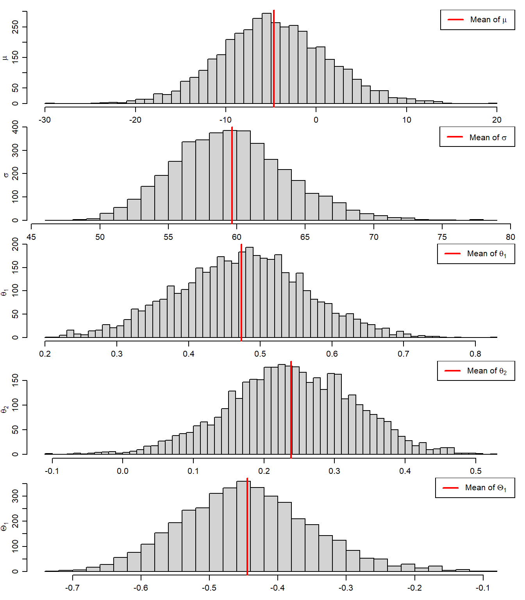
Figure 7.10: Histograms of MCMC samples for parameters in Somogy series
par(mfcol=c(5,1),mar=c(2,2.75,1,1),mgp=c(1.75,.75,0),oma=c(1.5,0,0,0))
# Autocorrelation
acf(data.somogy$mu0,ylab=expression(mu),main="")
acf(data.somogy$sigma,ylab=expression(sigma),main="")
acf(data.somogy$ma[,1],ylab=expression(theta[1]),main="")
acf(data.somogy$ma[,2],ylab=expression(theta[2]),main="")
acf(data.somogy$sma[,1],ylab=expression(Theta[1]),main="")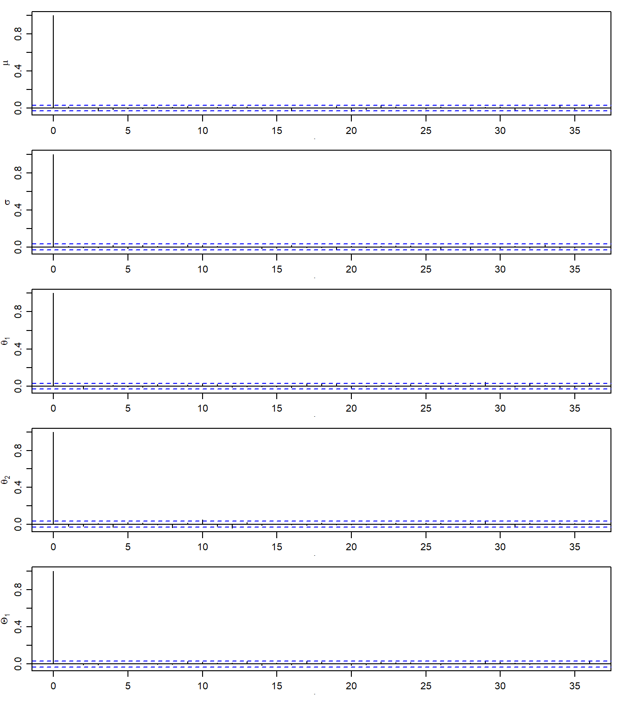
Figure 7.11: ACF plots of MCMC samples for parameters in Somogy series
# Traceplots
plot(data.somogy$mu0,xlab="Iteration",ylab=expression(mu))
plot(data.somogy$sigma,xlab="Iteration",ylab=expression(sigma))
plot(data.somogy$ma[,1],xlab="Iteration",ylab=expression(theta[1]))
plot(data.somogy$ma[,2],xlab="Iteration",ylab=expression(theta[2]))
plot(data.somogy$sma[,1],xlab="Iteration",ylab=expression(Theta[1]))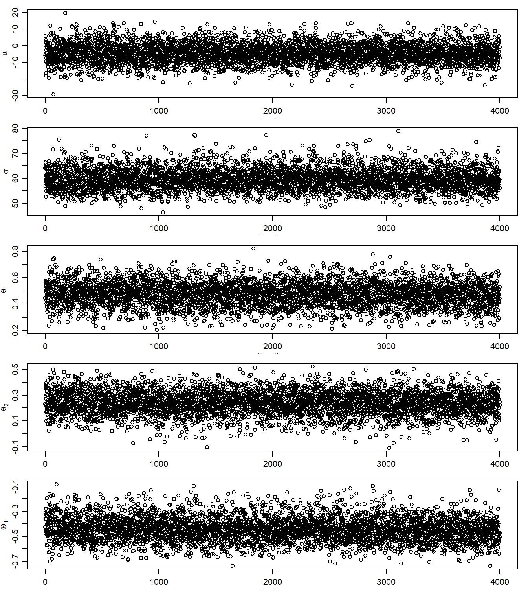
Figure 7.12: Traceplots of MCMC samples for parameters in Somogy series
Now, let us perform posterior predictive checks for a test statistic \(T\). Let \(x_{t}^{'}\) be the simulated series and \(x_{t}\) be the original monthly series, as described in Section 6.5.
| \(T\) | Identity | ACF | PACF |
|---|---|---|---|
| \(P\left( T\left( x_{t}^{'} \right) > T\left( x_{t} \right) \right)\) | 0.58 | 0.46 | 0.51 |
In Table 7.8, we can see that the simulated series tends to match the original series quite well in terms of the ACF and PACF values. The p-value directly comparing the magnitudes of the simulated series to the original series is a little high. Nevertheless, this is a good result given we are using 108 observations in our model and comparing to a 120-observation series.
Overall, the convergence checks indicate that the MCMC chains for the Somogy fitting have converged and the posterior predictive checks indicate that the model does a good job at replicating the behaviour of the original series.
7.2 Residual checks and other non-Bayesian diagnostics
A standard non-Bayesian check is to ensure that the residuals behave as white noise and are uncorrelated.
res.buda=residuals(sf.buda);res.pest=residuals(sf.pest)
res.heves=residuals(sf.heves);res.somogy=residuals(sf.somogy)
par(mfcol=c(4,1),mar=c(1,2.75,1,1),mgp=c(1.75,.75,0),oma=c(1.5,0,0,0))
plot(res.buda,ylab="Budapest",type='o'); abline(h=0,lty=2,col='grey')
plot(res.pest,ylab="Pest",type='o'); abline(h=0,lty=2,col='grey')
plot(res.heves,ylab="Heves",type='o'); abline(h=0,lty=2,col='grey')
plot(res.somogy,ylab="Somogy",type='o'); abline(h=0,lty=2,col='grey')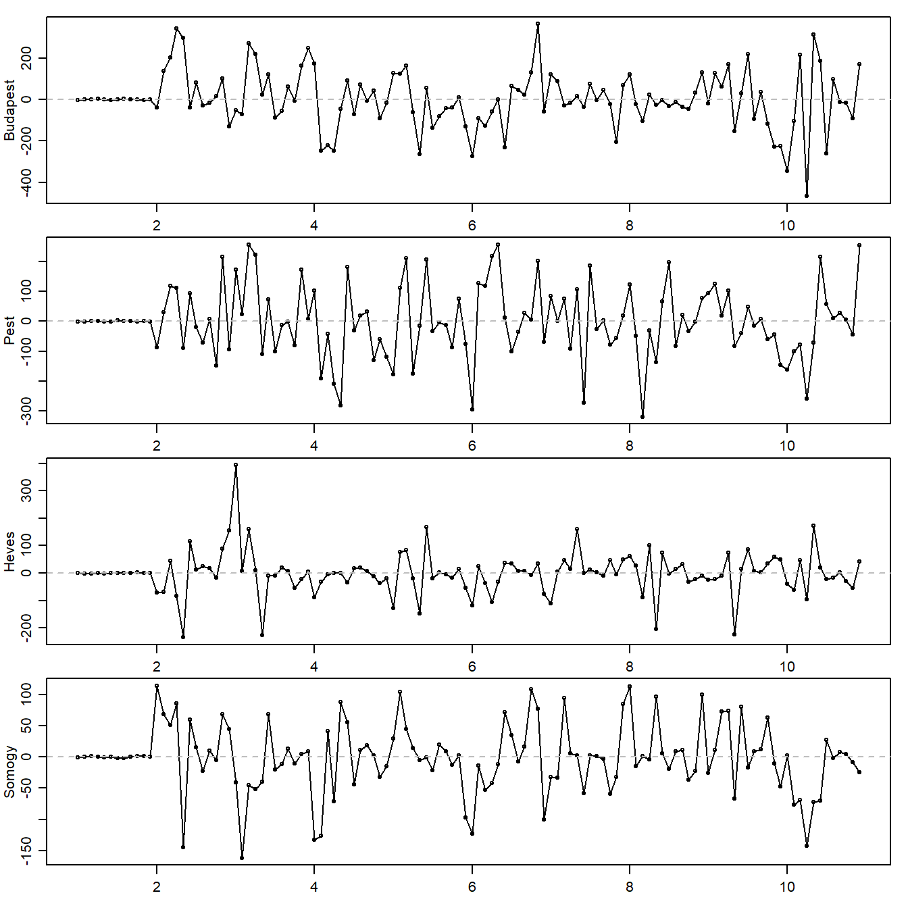
Figure 7.13: Residual plots for the fitted time series models
In Figure 7.13, we can see that the first 12 observations are considered fixed in the models. (The derivation in Section 6.3.1 assumes the most complicated case where 36 observations are fixed, but each of these fittings is a subset of the most complex case.) The rest of the plots are mostly centred at 0 and look reasonable, except some non-constant variance towards the end of the Budapest series, in the middle of the Pest series and potentially at some parts of the Somogy series.
par(mfcol=c(4,1),mar=c(2,2.75,1,1),mgp=c(1.75,.75,0),oma=c(1.5,0,0,0))
acf(res.buda,ylab="Budapest",main="")
acf(res.pest,ylab="Pest",main="")
acf(res.heves,ylab="Heves",main="")
acf(res.somogy,ylab="Somogy",main="")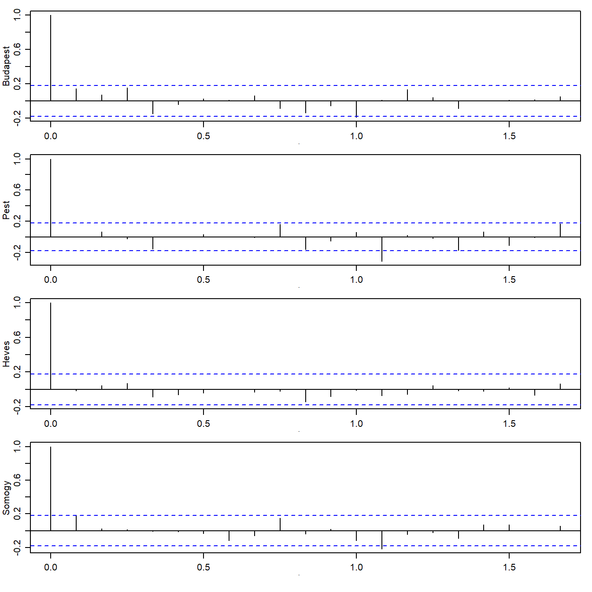
Figure 7.14: ACF plots for the residuals of the fitted time series models
pacf(res.buda,ylab="Budapest",main="")
pacf(res.pest,ylab="Pest",main="")
pacf(res.heves,ylab="Heves",main="")
pacf(res.somogy,ylab="Somogy",main="")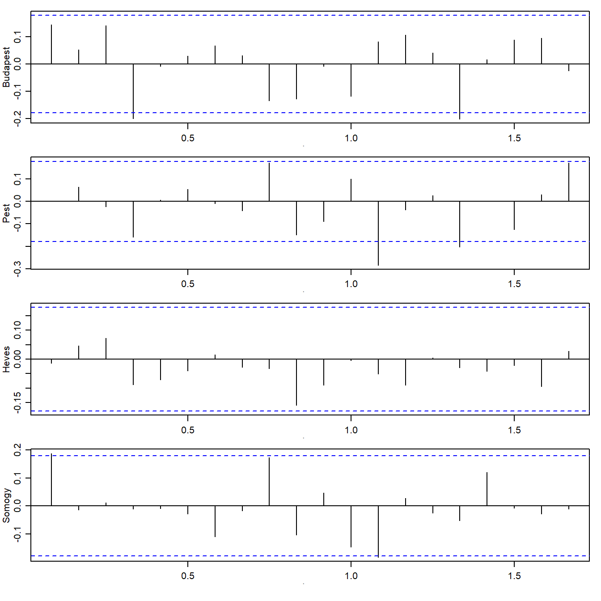
Figure 7.15: PACF plots for the residuals of the fitted time series models
In Figure 7.14, the ACF plots do not show any significant departures from being white noise, although Somogy and Pest do have one or two observations exceeding the threshold. In Figure 7.15, some PACF values for Pest and to a lesser extent Budapest should be a little smaller, but overall it may be acceptable.
par(mfrow=c(2,2),pty="s")
qqnorm(res.buda,main="",ylab="Budapest");qqline(res.buda)
qqnorm(res.pest,main="",ylab="Pest");qqline(res.pest)
qqnorm(res.heves,main="",ylab="Heves");qqline(res.heves)
qqnorm(res.somogy,main="",ylab="Somogy");qqline(res.somogy)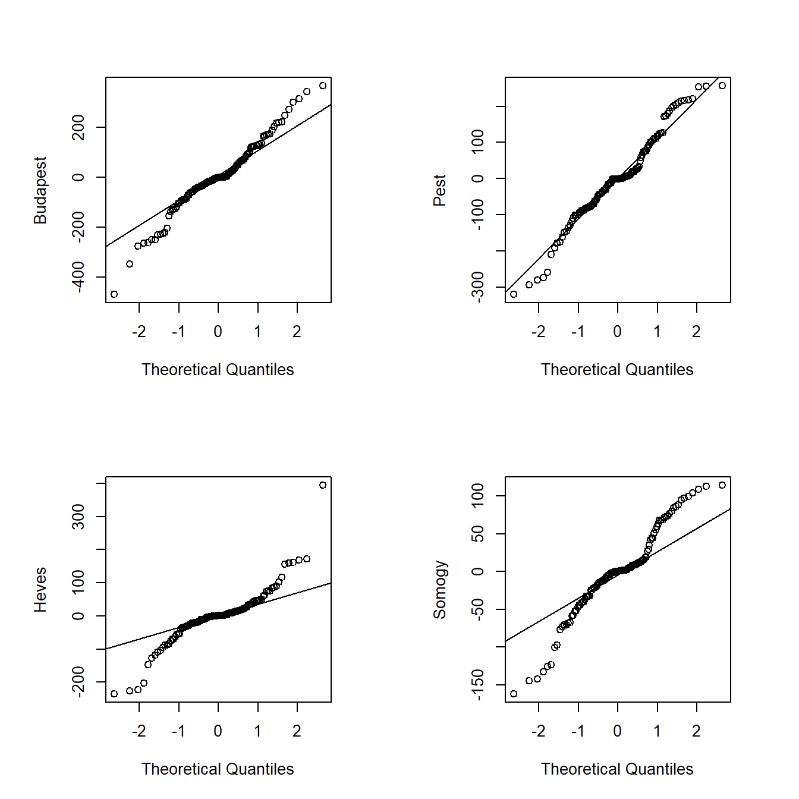
Figure 7.16: Q-Q plots for the residuals of the fitted time series models
par(mfcol=c(4,1),mar=c(1,2.75,1,1),mgp=c(1.75,.75,0),oma=c(1.5,0,0,0))
fitted.buda = as.numeric(fitted(sf.buda)); fitted.buda = ifelse(fitted.buda>0,fitted.buda,0)
fitted.buda = ts(fitted.buda,freq=season,start=2005)
ylimrange = range(c(as.numeric(plot.buda),as.numeric(fitted.buda)));ylimrange[2]=ylimrange[2]
plot(plot.buda,xaxt = "n",ylim=ylimrange,type='l',ylab="Budapest",main="")
lines(fitted.buda,col='red',type='o',lty=2); legend("topright",c("True","Fitted"),lty=c(1,3),col=c('black','red'))
fitted.pest = as.numeric(fitted(sf.pest)); fitted.pest = ifelse(fitted.pest>0,fitted.pest,0)
fitted.pest = ts(fitted.pest,freq=season,start=2005)
ylimrange = range(c(as.numeric(plot.pest),as.numeric(fitted.pest)));ylimrange[2]=ylimrange[2]
plot(plot.pest,xaxt = "n",ylim=ylimrange,type='l',ylab="Pest",main="")
lines(fitted.pest,col='red',type='o',lty=2); legend("topright",c("True","Fitted"),lty=c(1,3),col=c('black','red'))
fitted.heves = as.numeric(fitted(sf.heves)); fitted.heves = ifelse(fitted.heves>0,fitted.heves,0)
fitted.heves = ts(fitted.heves,freq=season,start=2005)
ylimrange = range(c(as.numeric(plot.heves),as.numeric(fitted.heves)));ylimrange[2]=ylimrange[2]
plot(plot.heves,xaxt = "n",ylim=ylimrange,type='l',ylab="Heves",main="")
lines(fitted.heves,col='red',type='o',lty=2); legend("topright",c("True","Fitted"),lty=c(1,3),col=c('black','red'))
fitted.somogy = as.numeric(fitted(sf.somogy)); fitted.somogy = ifelse(fitted.somogy>0,fitted.somogy,0)
fitted.somogy = ts(fitted.somogy,freq=season,start=2005)
ylimrange = range(c(as.numeric(plot.somogy),as.numeric(fitted.somogy)));ylimrange[2]=ylimrange[2]
plot(plot.somogy,xaxt = "n",ylim=ylimrange,type='l',ylab="Somogy",main="")
dates = as.Date(somogy1$Month); sequence = attributes(plot.somogy)$tsp
axis(1, at = seq(sequence[1], sequence[2], along = plot.somogy), labels = format(dates, "%Y-%m"))
lines(fitted.somogy,col='red',type='o',lty=2); legend("topright",c("True","Fitted"),lty=c(1,3),col=c('black','red'))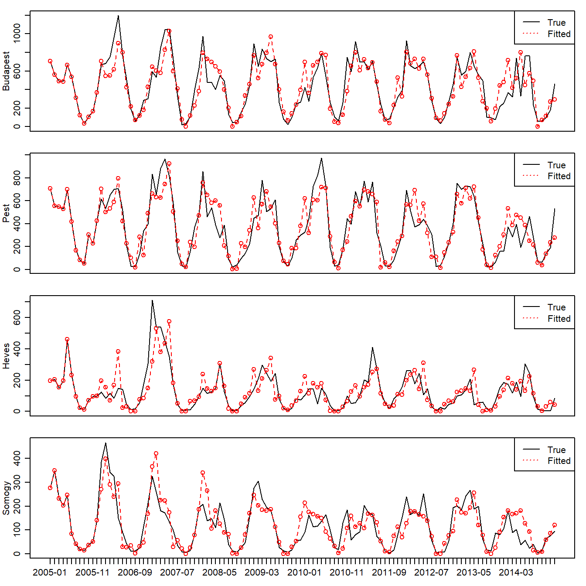
Figure 7.17: Fitted values against the original data
In Figure 7.16, the Q-Q plots all indicate heavier tails compared to the Normal distribution. This may make confidence intervals based on normal distributions less accurate, but does not affect the point estimates. There are other ways around this to create confidence intervals, such as bootstrapping (Hyndman & Athanasopoulos, 2021).
In Figure 7.17, the fitted time series show a reasonable fit to the original data. At least the first 12 observations are assumed in the model (see Section 6.3.1) and for most of the plots, the rest of the fit is not too far from the observed values. This indicates that the fittings are reasonable.
fc.buda = bayesforecast::forecast(sf.buda,h=12)
fc.pest = bayesforecast::forecast(sf.pest,h=12)
fc.heves = bayesforecast::forecast(sf.heves,h=12)
fc.somogy = bayesforecast::forecast(sf.somogy,h=12)
lower80.buda = fc.buda$lower[,1]; upper80.buda = fc.buda$upper[,1]
plot.fc.buda = ts(as.numeric(fc.buda$mean),freq=season,start=2014)
lower80.pest = fc.pest$lower[,1]; upper80.pest = fc.pest$upper[,1]
plot.fc.pest = ts(as.numeric(fc.pest$mean),freq=season,start=2014)
lower80.heves = fc.heves$lower[,1]; upper80.heves = fc.heves$upper[,1]
plot.fc.heves = ts(as.numeric(fc.heves$mean),freq=season,start=2014)
lower80.somogy = fc.somogy$lower[,1]; upper80.somogy = fc.somogy$upper[,1]
plot.fc.somogy = ts(as.numeric(fc.somogy$mean),freq=season,start=2014)
times = (length(plot.buda)-4*season):length(plot.buda)
dates = as.Date(somogy1$Month)[times]; sequence = attributes(plot.somogy)$tsp
par(mfcol=c(4,1),mar=c(1,2.75,1,1),mgp=c(1.75,.75,0),oma=c(1.5,0,0,0))
ylimrange = range(c(as.numeric(buda1$Cases)[times],as.numeric(fc.buda$mean),upper80.buda,lower80.buda))
plot(times,plot.buda[times],xaxt = "n",ylim=ylimrange,type='l',ylab="Budapest",main="")
lines((length(plot.buda)-test+1):length(plot.buda),as.numeric(plot.fc.buda),lty=2,type='o',col='red')
lines((length(plot.buda)-test+1):length(plot.buda),lower80.buda,lty=2,col='blue')
lines((length(plot.buda)-test+1):length(plot.buda),upper80.buda,lty=2,col='blue')
legend("topleft",c("True","Forecast","Interval"),lty=c(1,2,2),col=c('black','red','blue'))
ylimrange = range(c(as.numeric(pest1$Cases)[times],as.numeric(fc.pest$mean),upper80.pest,lower80.pest))
plot(times,plot.pest[times],xaxt = "n",ylim=ylimrange,type='l',ylab="Pest",main="")
lines((length(plot.pest)-test+1):length(plot.pest),as.numeric(plot.fc.pest),lty=2,type='o',col='red')
lines((length(plot.pest)-test+1):length(plot.pest),lower80.pest,lty=2,col='blue')
lines((length(plot.pest)-test+1):length(plot.pest),upper80.pest,lty=2,col='blue')
legend("topleft",c("True","Forecast","Interval"),lty=c(1,2,2),col=c('black','red','blue'))
ylimrange = range(c(as.numeric(heves1$Cases)[times],as.numeric(fc.heves$mean),upper80.heves,lower80.heves))
plot(times,plot.heves[times],xaxt = "n",ylim=ylimrange,type='l',ylab="Heves",main="")
lines((length(plot.heves)-test+1):length(plot.heves),as.numeric(plot.fc.heves),lty=2,type='o',col='red')
lines((length(plot.heves)-test+1):length(plot.heves),lower80.heves,lty=2,col='blue')
lines((length(plot.heves)-test+1):length(plot.heves),upper80.heves,lty=2,col='blue')
legend("topleft",c("True","Forecast","Interval"),lty=c(1,2,2),col=c('black','red','blue'))
ylimrange = range(c(as.numeric(somogy1$Cases)[times],as.numeric(fc.somogy$mean),upper80.somogy,lower80.somogy))
plot(times,plot.somogy[times],xaxt = "n",ylim=ylimrange,type='l',ylab="Somogy",main="")
lines((length(plot.somogy)-test+1):length(plot.somogy),as.numeric(plot.fc.somogy),lty=2,type='o',col='red')
lines((length(plot.somogy)-test+1):length(plot.somogy),lower80.somogy,lty=2,col='blue')
lines((length(plot.somogy)-test+1):length(plot.somogy),upper80.somogy,lty=2,col='blue')
legend("topleft",c("True","Forecast","Interval"),lty=c(1,2,2),col=c('black','red','blue'))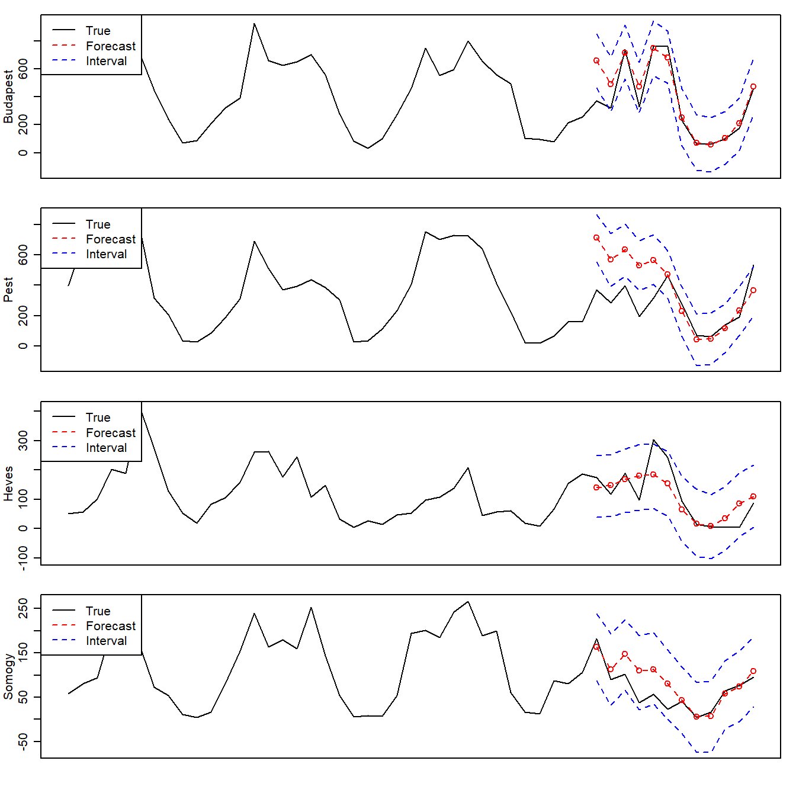
Figure 7.18: Plots of forecasted against original data
In Figure 7.18, the forecasted values are shown against the last few years of data, including the final year. Notably, the Pest series departs considerably from its estimate, but the others look fine. As we determined earlier, we should not read too much into the confidence intervals as the Q-Q plots were heavy-tailed.
Overall, there are some slightly worrying issues about the fitting for the Pest series, but we may regard it as acceptable since had good posterior predictive check results.